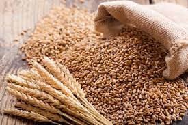
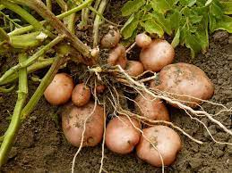

Cropping Seasons
| S. No | Cropping Season | Time Period | Crops | States |
|---|---|---|---|---|
| 1. | Rabi | Sown: October-December Harvested: April-June | Wheat, barley, peas, gram, mustard etc. | Punjab, Haryana, Himachal Pradesh, Jammu and Kashmir, Uttarakhand and Uttar Pradesh |
| 2. | Kharif | Sown: June-July Harvested: September-October | Rice, maize, jowar, bajra, tur, moong, urad, cotton, jute, groundnut, soybean etc. | Assam, West Bengal, coastal regions of Odisha, Andhra Pradesh, Telangana, Tamil Nadu, Kerala and Maharashtra |
| 3. | zaid | Sown and harvested: March-July (between Rabi and Kharif) | Seasonal fruits, vegetables, fodder crops etc. | Most of the northern and northwestern states |
Major Crops

Pulses

Wheat

Potato